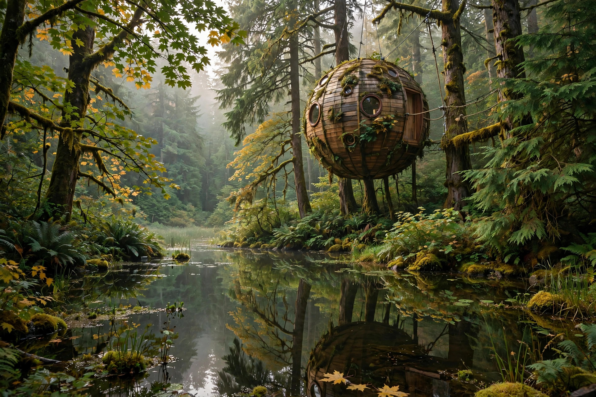
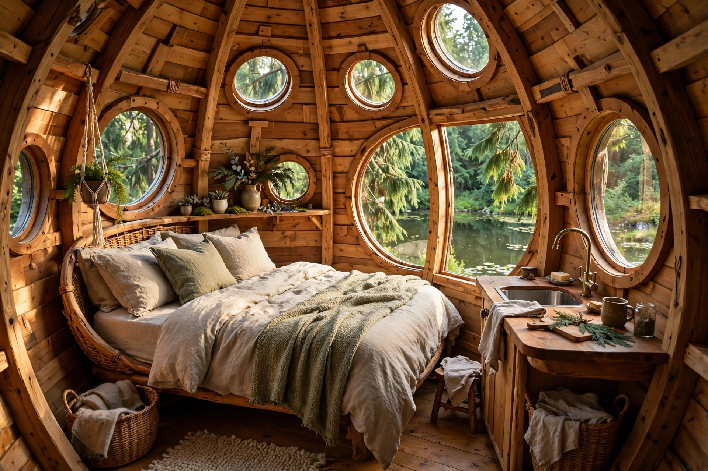
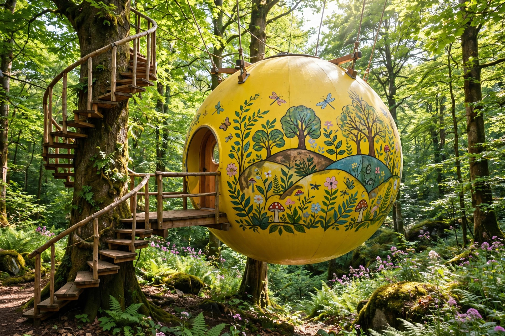
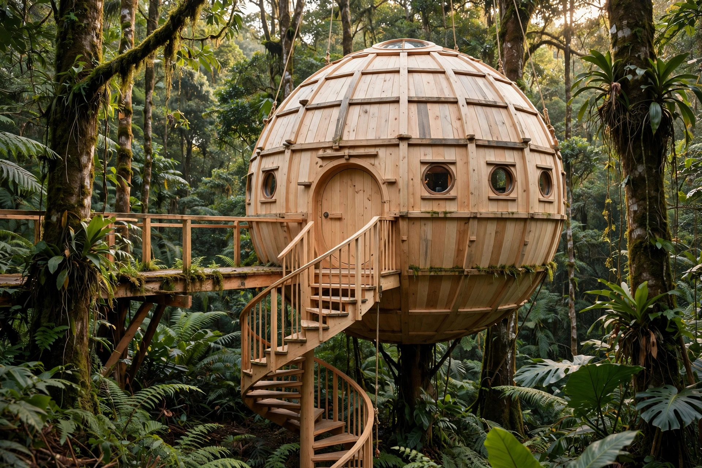
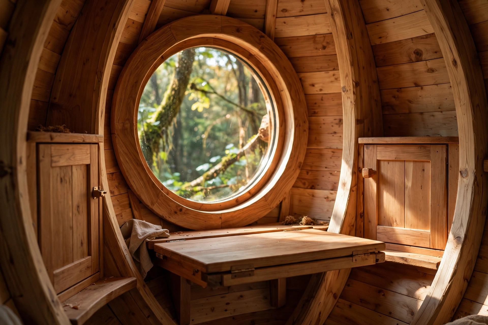
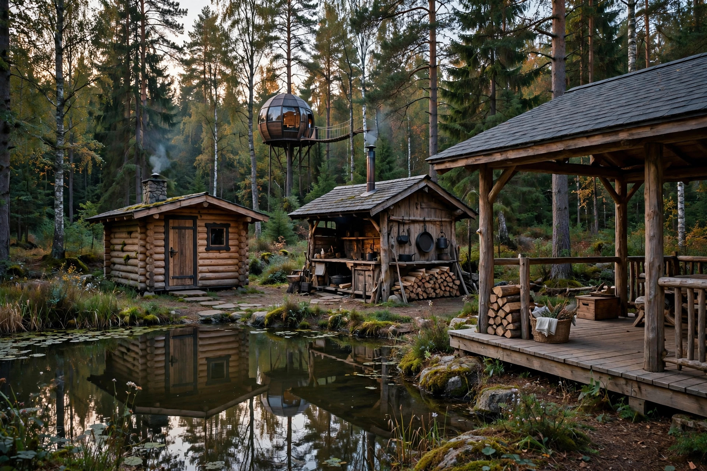
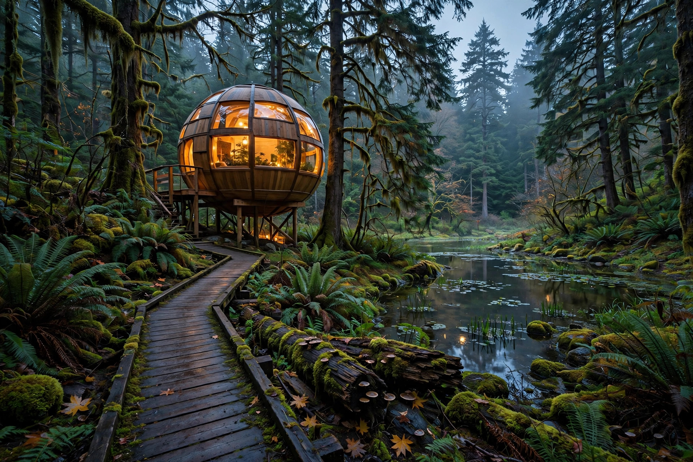

Pulse HQ · Postbox
Free Spirit Spheres
TEST CLIENT — simulation only; this postbox is a Pulse HQ rehearsal and is never sent to the business. Seven finished Facebook posts with their images.
Post 1 — A quieter way to sleep in the forest
Test delivery · 2026-10-18

There is a quieter way to sleep in the forest.
At Free Spirit Spheres, round treehouses hang in the coastal rainforest of Vancouver Island, on a 5-acre private property near Qualicum Bay. There is a large pond at the centre of the land, the trees all around, and just three spheres to choose from — Luna, Melody, and Eryn.
It is back to nature, with a little comfort tucked in: bedding, towels, and bath robes are provided, tea and coffee fixings are waiting inside, and a complimentary snack greets you on arrival.
Find us at 420 Horne Lake Rd in Qualicum Beach, and come settle into the trees for a while.
Post 2 — Meet Luna
Test delivery · 2026-10-18

Meet Luna, our newest sphere.
By day, her rectangular double bed rises toward the ceiling on an electrically operated hydraulic lift, opening up a lounge-style sitting area, a fixed settee-style table, and a small galley counter with a sink. By night, the bed lowers down again and the round room turns back into a bedroom.
You reach Luna by a spiral staircase to a platform, out toward the back of the property in a grove of yellow cedar logs, with views toward cedar and maple trees and the pond. Inside there is electric heat, filtered water, cupboards with basic dishes, and a speaker system for your own music.
Luna sleeps 1 or 2 people and is listed at $395 CDN a night, plus 15% hotel tax.
Climb up, close the round door, and let the forest do the rest.
Post 3 — Meet Melody
Test delivery · 2026-10-18

Melody has a song in her walls.
She was our first finished fibreglass sphere — vibrant yellow on the outside, with a mural, and warm black walnut inside. Five windows, including a skylight, keep the light moving through the open living space, with bench seats tucked under the large windows and two fold-down tables if you feel like working.
That is why we love her for longer stays, and as a working studio for artists, musicians, and writers looking for a quiet place to make something. At night, a Murphy double bed folds out of the back wall.
You get to Melody by a short bridge, then stairs that spiral around a tree. She sleeps 1 or 2 people and is listed at $375 CDN a night, plus 15% hotel tax, with a small sink, purified water, and tea and coffee fixings inside.
Bring the project you have been meaning to finish, and give it a few days in the trees.
Post 4 — Meet Eryn
Test delivery · 2026-10-18

Eryn is the handcrafted one.
She is our second handcrafted wooden sphere, made from Sitka spruce, with five windows including a skylight. An elevated walkway brings you to a platform at the base of a spiral staircase, and up you go to the door.
Inside, there is a slightly under-sized double bed for two average-sized adults, a small sink and small refrigerator, counter space, a settee, and cupboards with dishes, filtered water, and tea and coffee fixings. She is electrically heated, with a wall thermostat, and a speaker system for your own music.
Eryn is listed at $355 CDN a night, plus 15% hotel tax. A third person may be able to use the loft bed for an added $50 a night, subject to a 165 lb / 75 kg weight limit and the access cautions on her page — just ask us about it when you call.
Some rooms have four corners. Eryn chose a gentler shape.
Post 5 — Built by hand
Test delivery · 2026-10-18

A sphere is not built in a hurry.
Ours are shaped by hand and by patience, under the eye of Tom, our Master Craftsman and Creative Director. Eryn is handcrafted from Sitka spruce. Melody pairs her fibreglass shell with a black walnut interior. Each sphere measures 3200 mm across, with windows placed to let the forest in from every side.
You can feel that care in the small things: a bed that folds away or lifts to the ceiling so the living space can breathe, cupboards fitted into curved walls, tables that fold down where the light falls best.
We are proud of how these little round rooms are made, and even prouder when someone climbs in, looks around, and smiles.
Good craft takes its time, and so should a stay in it.
Post 6 — A grown-ups' forest
Test delivery · 2026-10-18

This is a grown-ups' forest.
Free Spirit Spheres is an adult-only facility, for guests 16 years and over, so the pace here stays calm and unhurried. Days tend to go slowly: time on the covered deck, a session in the sauna in the Cook House, and supper from the shared galley kitchen or the barbecue.
Each sphere has a composting toilet at its base, and its own private 3-piece bathroom — toilet, sink, and shower — in the central heated bathhouse, about 50 metres away. Robes are provided for the wander over, which somehow becomes part of the ritual.
No rush, no noise to compete with, just the pond, the trees, and room to breathe.
Leave the busy world at the gate, and we will keep the forest quiet for you.
Post 7 — How to book
Test delivery · 2026-10-18

Thinking of coming to stay? Here is the simple part.
All bookings are made by phone — call us at 250-757-9445 between 9am and 8pm. Check-in is at 3pm on your arrival day, and check-out is at 11am on departure day. Weekends carry a two-night minimum, though a single weekend night can sometimes open up as little as 4 days before the weekend if there is no two-night booking — and if your preferred dates are full, you are welcome to join our cancellation list.
We make a good base for exploring, too: Lighthouse Country trails, Cathedral Grove, and Horne Lake Caves are nearby, and Qualicum Beach, Parksville, Coombs, and Cumberland are all within about 30 minutes. The nearest restaurants are about 3 km away in Qualicum Bay, and there is a small galley kitchen and barbecue here on the property as well.
Call when you are ready, and we will help you pick your sphere.